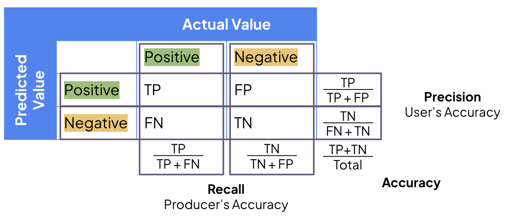
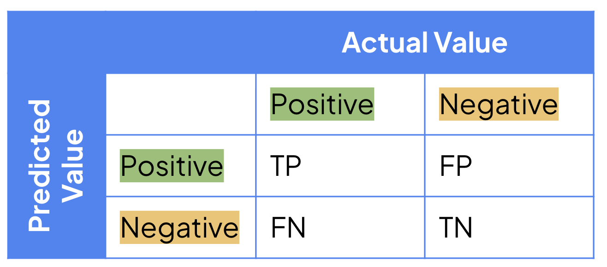
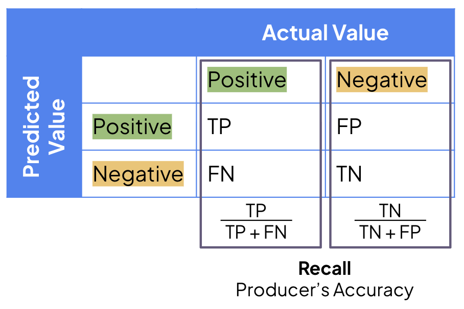
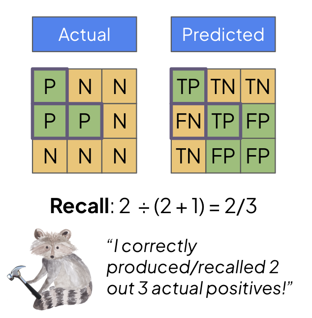
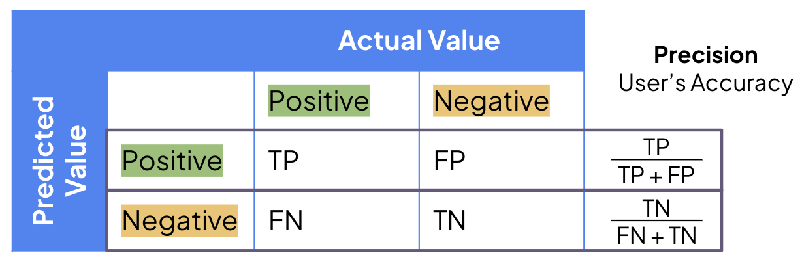
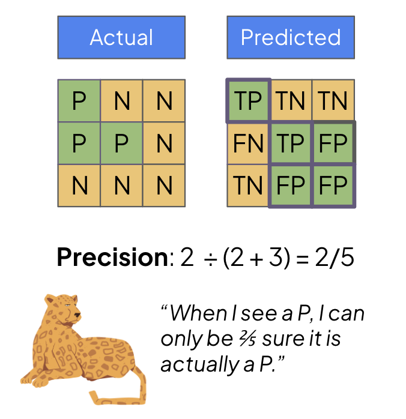
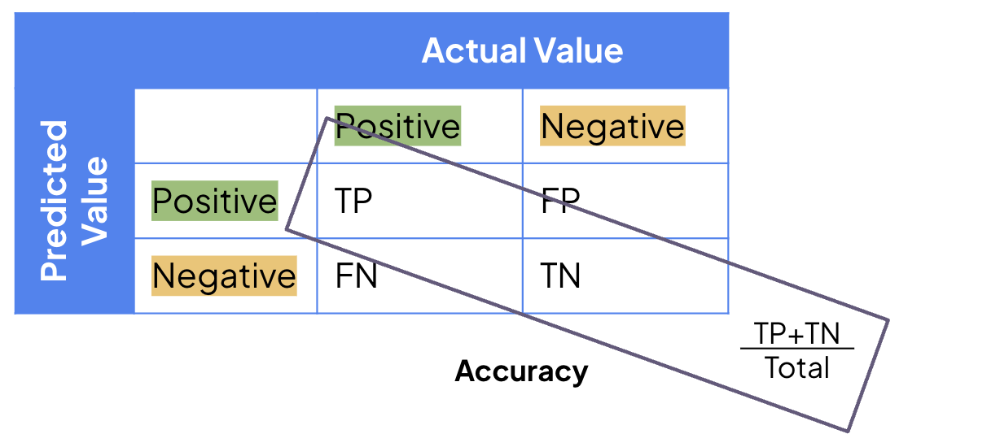

I cannot count the number of times I’ve had to Google the formulas for Precision and Recall, until I found an explanation that changed everything.
The explanation that made it click for me comes from the book Cloud-Based Remote Sensing with Google Earth Engine (Nicolau et al., 2023). Hopefully, this explanation will also be helpful to you.
Here’s what we will build up to:

🤔 The Confusion Matrix
Recall and precision are key metrics for evaluating classification models.
Let’s say we have a grid of pixels we want a model to classify as (P)lant or (N)on-Vegetated area (our “Positive” and “Negative” classes). We will have actual (real-world) and predicted (model-classified) classifications. People often divide the predictions as follows:
True Positive (TP): These are predicted positivies that are indeed actual positivies
True Negative (TN): These are predicted negatives that are indeed actual negatives
False Positive (FP): These are predicted positivies that are indeed actual negatives. They are not positives, although the model thought so!
False Negative (FN): These are predicted negatives that are indeed actual positives. They are not negatives, although the model thought so!
We can summarize these combinations in a confusion matrix, like so:

Now we can understand recall and precision.
🏗️ Recall: The Producer’s Accuracy
Recall is the producer’s accuracy..
Think of you creating a map of (P)lants and (N)on-vegetated areas. The recall for the (P)lant class is how many plants you can produce. This is just the number of correct (P)lants divided by all (P)lants. The correct number of plants is simply our true positive (TP) count. The total number of plants is the sum of the ones we classified correctly (TP) and the plants we wrongly misclassified, i.e., the false negative (FN) count.
\[\text{Recall (P)} = \frac{\text{TP}}{\text{TP + FN}}\]

Think of it this way: there is some pool of actual positive pixels out there. When we are producing a map, we want to correctly classify (or recall) as many of those pixels as possible.

🔎 Precision: The User’s Accuracy
Precision is the user’s accuracy..
Now that the prediction map is complete, we are interested in the validity of the information as users of it. If the map says that this pixel is a (P)lant, how confident am I as a user that it is actually a plant?
Therefore, we are interested in knowing the number of pixels correctly classified divided by the total number of pixels claimed to be in that class.
\[\text{Precision (P)} = \frac{\text{TP}}{\text{TP + FP}}\]

Think of it this way: the model claims that some pool of pixels is plants. However, you know that the model may have incorrectly labeled some pixels. So you want to know how much you can trust the plant pixel candidates.

⚙️ Accuracy: Total Assessment
Now, the original accuracy is the number of correctly classified pixels (both positive and negative) divided by the total number of pixels.
\[\text{Accuracy} = \frac{\text{TP + TN}}{\text{TP + FP + TN + FN}} = \frac{\text{TP + TN}}{\text{Total}}\]

This is a general metric, but it may not provide insights into class imbalances.
📝 Summary
So there we have it: precision, recall, and accuracy.
Hopefully, you now have a better understanding of these terms. Perfect recall implies that you, as a producer, can correctly label every single positive class pixel. However, this doesn’t necessarily make users happy if the model labels everything as the positive class.
Different applications will require varying degrees of attentiveness to precision and recall. Applications where a misclassification could be lethal benefit from high precision standards. However, if it is costly to miss even a single instance, you might be more interested in recall.
Thank you for reading!
🗃️ References
Nicolau, A. P., Dyson, K., Saah, D., & Clinton, N. (2023). Accuracy Assessment: Quantifying Classification Quality. In J. Cardille, M. Crowley, D. Saah, & N. Clinton (Eds.), Cloud-Based Remote Sensing with Google Earth Engine: Fundamentals and Applications (pp. 135–145). SpringerOpen
Citation
@online{heiman2025,
author = {Heiman, Alice},
title = {Precision Vs. {Recall} Vs. {Accuracy:} {Finally} {Memorize}
the {Difference}},
date = {2025-07-28},
url = {https://aliceheiman.github.io},
langid = {en}
}